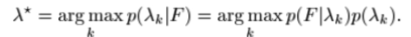
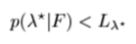
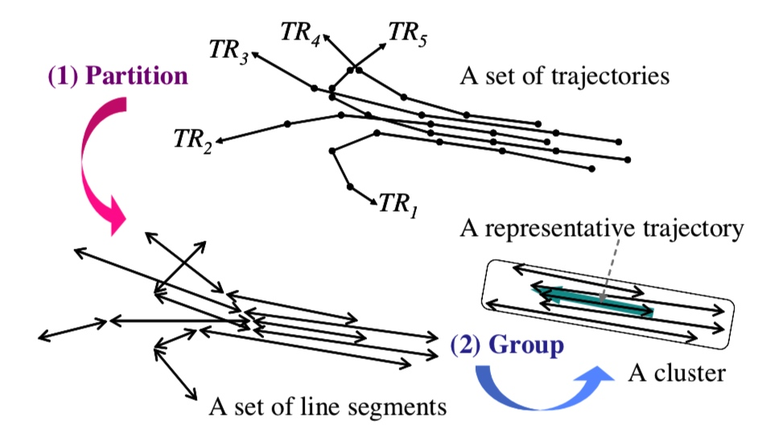
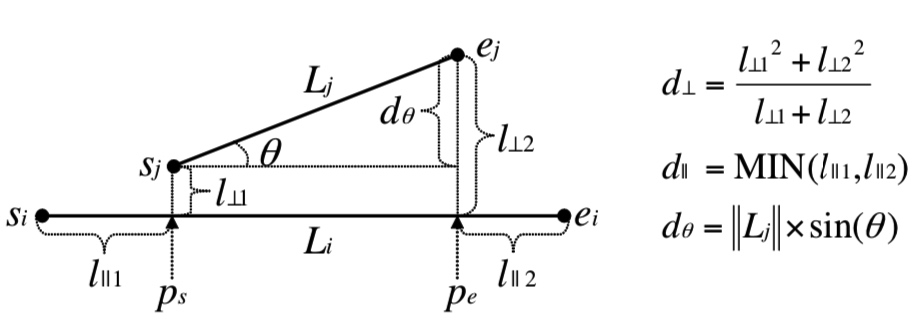
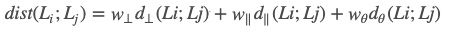
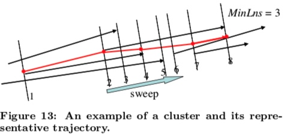

所属 Topic：轨迹分析 · 类型：案例
应用案例#
Learning and Classification of Trajectories in Dynamic Scenes: A General Framework for Live Video Analysis#
作者的通用方法：topological scene 描述
用Graph的方法，nodes表示POI，edges表示活动的path，将这个称作POI/AP方法
(1)POI
有两类POI，一类是进/出时候（这种可以通过轨迹数据的开始和结束点确定），一类是逗留的点(这种可以通过算法识别出来)
这些区域可以通过混合高斯模型进行估计\sum w_iN(u_i,\Sigma_i)
(2)route clustering
- fuzzy C means
- 聚完后有些类别可能会比较详细，还需要再进行一步route mergeing操作. 如果两个类之间的dtw距离均足够小，就认为是一类
(3) path modeling
HMM model
===> zzz
应用的时候一个是实时预测，可以用概率图，实时给出其到每个路径的概率。
1. indoor trajectory mining#
1 preprocessing
- 跳楼层问题，1-3
- 空间异常点
- 排除不感兴趣的点，电梯，。
- 数据压缩，相同坐标的点
2 转化为semantic trajectory
即将坐标转为店铺id
trajectory segmentation
轨迹切分按照方法来讲，大致分为三类:
- 无监督的： 比如通过聚类的方法 TRACLUS,SMOT, CN-SM0T,
- 有监督的L=:
- 半监督的
-
切分效果的评估：
(1) 基于无监督的聚类方法的评估 -
average purity and average coverage.
论文举例#
(0) interpolation based change detection
OWS(Octal Window Segmentation)切分方法，作者的出发点：当一个运动的物体其运动状态发生改变时候，因为有惯性，他会超出之前的预期。通过定义的误差函数找到这些“拐点”从而将轨迹进行切分。
Poi#
semantic scene model
POI点
* 轨迹的开始/结束
* 逗留
* 其他自己定义的
learning path
对聚出来的每一个类学出来一个path
HMM 【16】【22】【55】
分析应用
- 分流分析： 流量统计、闲逛人群 【21】
-
速度分析
-
后续的path分类

-
异常点检测

- 实时预测
- 交通冲突
Trajectory Clustering: A Partition-and-Group Framework#
作者出发点不是从全局出发，因为全局上不相似可能在片段是是相似的，尤其是在当只对某些片段感兴趣的时候。作者采用了先partition再group的方法。这种方法的优势:能发现common sub-trajectory。其核心思想如下.github上的一个实现： https://github.com/MillerWu2014/trajectory-cluster
partition-and-group framework

主要步骤如下
(1) 轨迹的距离度量
两条轨迹的距离会从三个方面进行度量：
* 垂直距离
* 平行距离
* 角度距离

最终的距离是以上三种的加权

(2) 轨迹切分
轨迹切分，即用尽量少的点，能尽量代表原来轨迹的信息(减少与原始轨迹的误差)。这里主要是通过MDL(最小描述长度)算法。 L(H)+L(D|H), partition后的轨迹长度 + 原始轨迹与partition后的轨迹的距离。
MDL(麦当劳)原理:是研究通信编码的时候提出的，对于给定的一组数据D，为了要对其进行保存，一般都会采用某种模型H对其进行编码压缩。同时为了能够正确恢复这些数据，将模型也保存起来。所以需要保存的数据长度=保存模型的数据长度 + 这些数据压缩后的长度. L(H) + L(D|H)
(3)cluster
对于每一个segment，相当于是一个数据点，然后采用基于密度的聚类。
(4) representative trajectory of a cluster
对于聚好类的一堆曲线，需要找到其有representative的曲线来表示这一类的特点。

(2)